員工資訊APP 設計稿
回作品集
APP前台設計稿
以ios螢幕解析度寬375px為例
前導-頁面架構
設計稿展示內容，為亮色區塊之頁面
L1登入
L1.1.1登入 初始狀態
L1.1.2登入 理想狀態
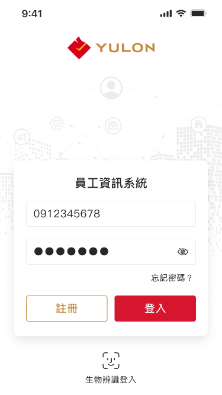
L1.1.3登入 欄位顯示密碼
L1.1.4登入 輸入框極限狀態
L1.1.5登入 檢核登入資料
L1.1.6登入 錯誤狀態


接續展示頁面
B1員工福利
B1.1.1員工福利 理想狀態

B1.1.2員工福利 載入福利項目
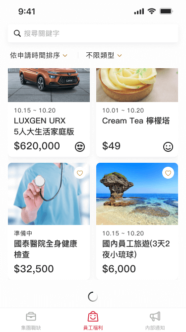
B1.1.3員工福利 已呈現所有項目提示
B1.1.4員工福利 加入收藏提示
B1.1.5員工福利 移除收藏提示
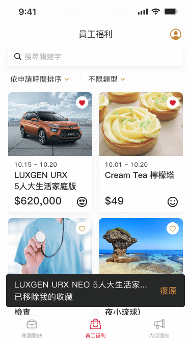
B1.1.6員工福利 空白狀態
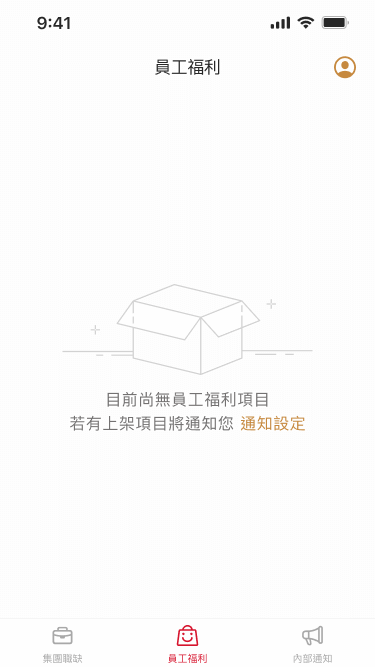
B1.2.1員工福利 排序視窗
B1.3.1員工福利 篩選視窗
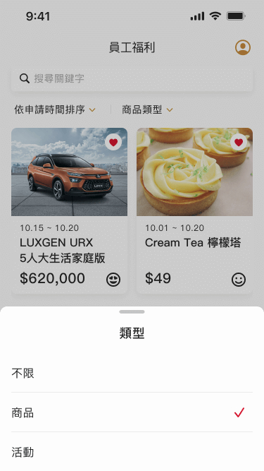
B1.4.1員工福利-搜尋 初始狀態
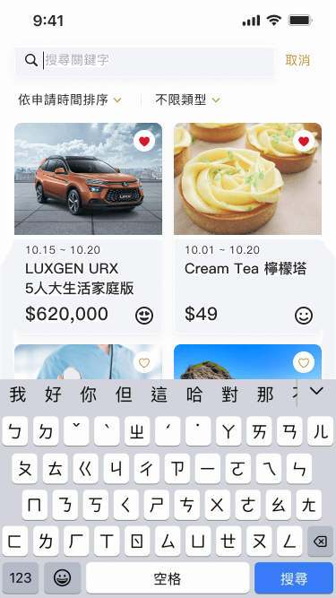
B1.4.2員工福利-搜尋 輸入關鍵字
B1.4.3員工福利-搜尋 輸入框極限狀態
B1.5.1員工福利-搜尋結果 理想狀態
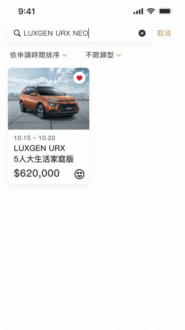
B1.5.2員工福利-搜尋結果 空白狀態
B2福利內容
B2.1.1福利內容 理想狀態
B2.1.2福利內容 加入收藏提示
B2.1.3福利內容 移除收藏提示
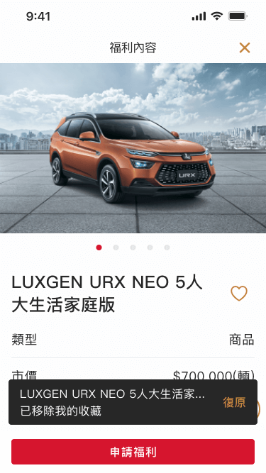
B2.2.1福利內容 申請提示-不符申請資格
B2.3.1福利內容 申請提示-已達數量限制
B2.4.1福利內容-留言 理想狀態
B2.4.2福利內容-留言 空白狀態
B2.4.3福利內容-留言 輸入留言
B2.4.4福利內容-留言 發生錯誤
B2.4.5福利內容-留言 已呈現所有內容
B3申請福利
B3.1.1申請福利 初始狀態
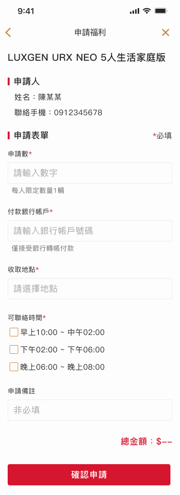
B3.1.2申請福利 理想狀態

B3.1.3申請福利 錯誤狀態
B4送出申請
B4.1.1送出申請-成功

B4.2.1送出申請-失敗
已瀏覽完 內容(一)設計稿
APP前台設計稿
以ios螢幕解析度寬375px為例
前導-頁面架構
設計稿展示內容，為亮色區塊之頁面
接續展示頁面

前導情境
載入頁面
頁面發生錯誤
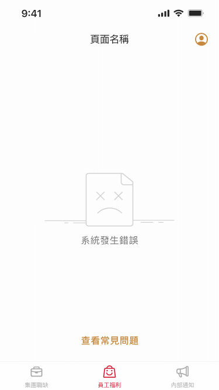
Q1常見問題
Q1.1.1常見問題 理想狀態
Q2問題回報
Q2.1.1問題回報 初始狀態
Q2.1.2問題回報 理想狀態
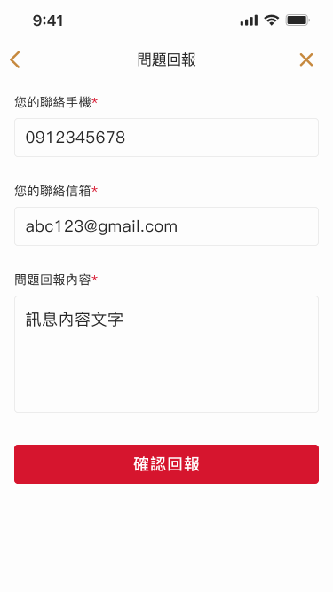
Q2.1.3問題回報 錯誤狀態
接續展示頁面
J1集團職缺
J1.1.1集團職缺 理想狀態
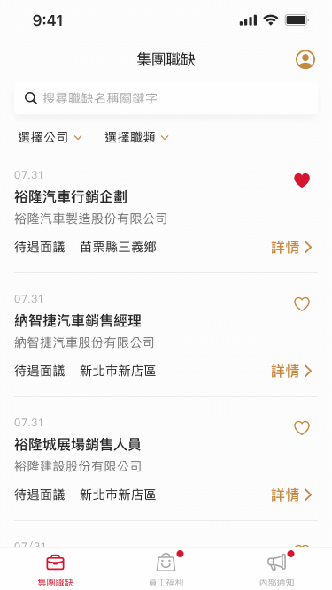
J1.1.2集團職缺 載入職缺
J1.1.3集團職缺 已呈現所有項目提示
J1.1.4集團職缺 加入收藏提示
J1.1.5集團職缺 移除收藏提示
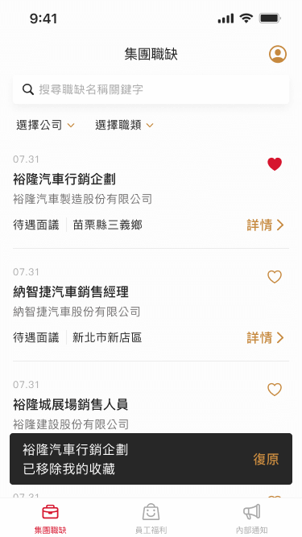
J1.1.6集團職缺 空白狀態
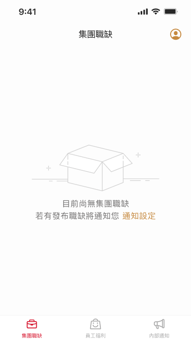
J1.2.1集團職缺 排序視窗
J1.3.1集團職缺 篩選視窗
J1.1.7集團職缺 篩選提示
J1.4.1集團職缺-搜尋 初始狀態
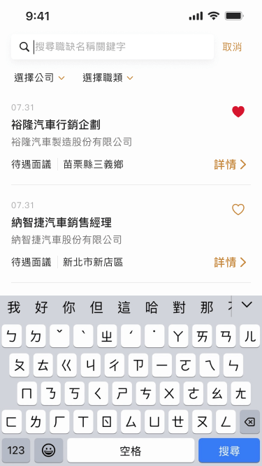
J1.4.2集團職缺-搜尋 輸入關鍵字
J1.4.3集團職缺-搜尋 輸入框極限狀態
J1.5.1集團職缺-搜尋結果 理想狀態
J1.5.2集團職缺-搜尋結果 空白狀態
J2職缺內容
J2.1.1職缺內容 理想狀態
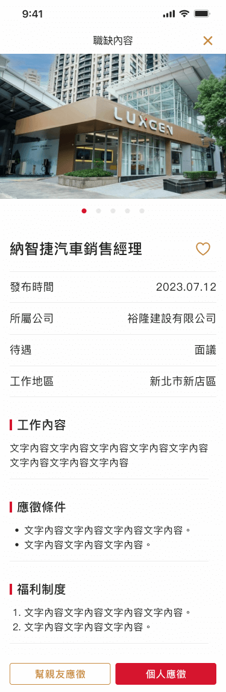
J2.1.2職缺內容 加入收藏提示
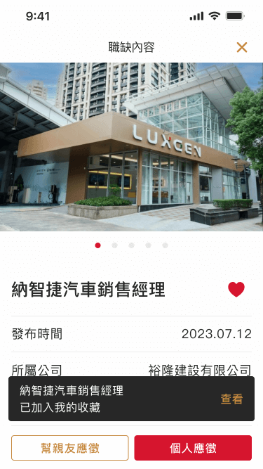
J2.1.3職缺內容 移除收藏提示
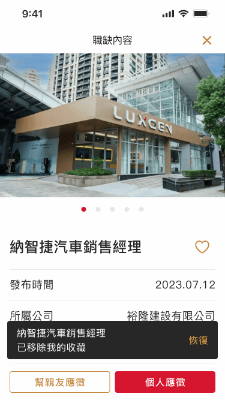
J2.2.1職缺內容 已應徵提示
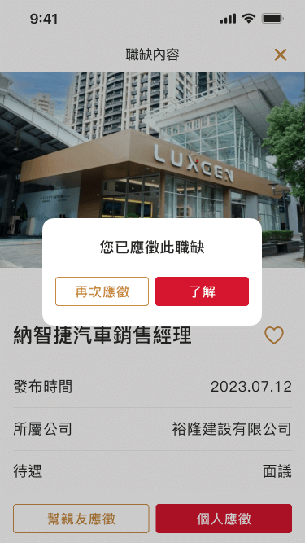
J3應徵職缺
J3.1.1應徵職缺 初始狀態
J3.1.2應徵職缺 理想狀態
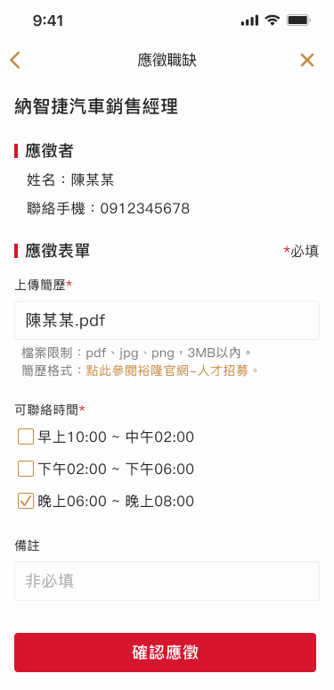
J3.1.3應徵職缺 錯誤狀態
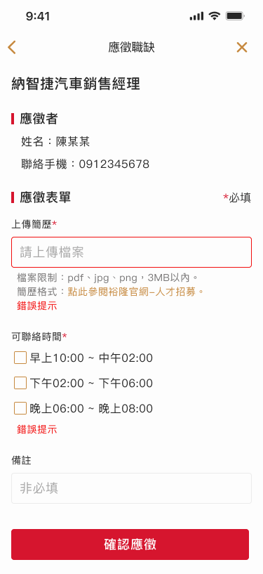
J3.1.1應徵職缺-親友 初始狀態
J3.1.2應徵職缺-親友 理想狀態
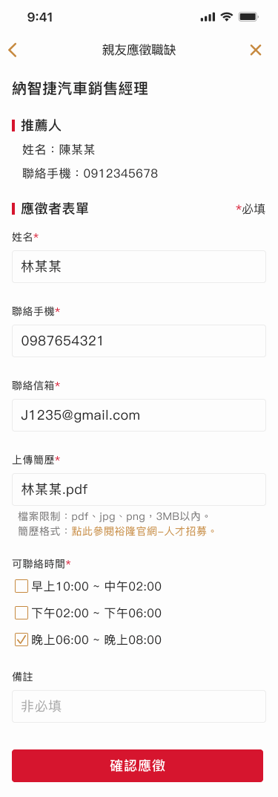
J3.1.3應徵職缺-親友 錯誤狀態
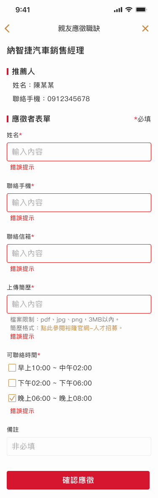
J4送出應徵
J4.1.1送出應徵-成功

J4.2.1送出應徵-失敗
接續展示頁面
N1內部訊息
N1.1.1內部訊息-集團 理想狀態

N1.1.2內部訊息-集團 載入訊息
N1.1.3內部訊息-集團 已呈現所有訊息
N1.2.1內部訊息-系統 理想狀態
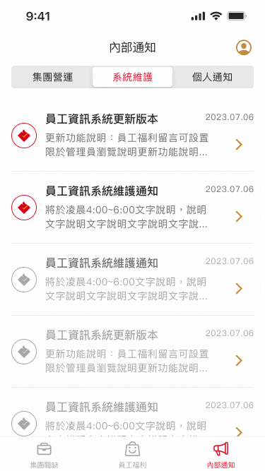
N1.3.2內部訊息-個人 理想狀態
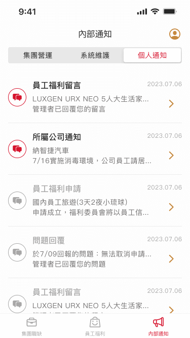
N1.1.4內部訊息-集團 空白狀態
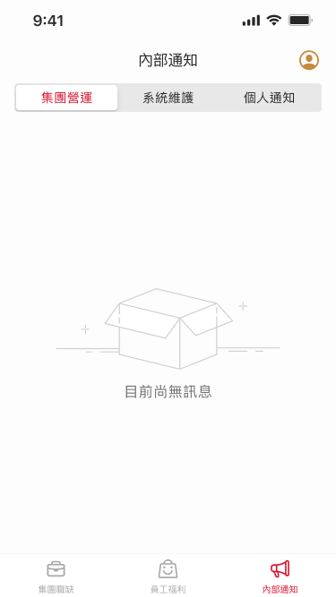
N2閱讀訊息
N1.4.1閱讀訊息-集團 理想狀態

N1.5.1閱讀訊息-系統、個人 理想狀態
接續展示頁面
M1專屬員工資料
M1.1.1專屬員工資料 理想狀態
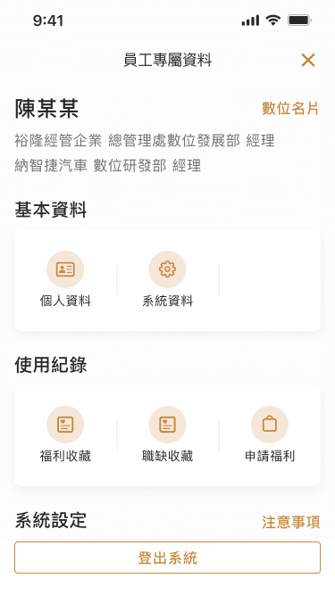
M10職務項目
N1.2.1內部訊息-系統 理想狀態
M11數位名片
N11.1.1數位名片-中文
N11.2.1數位名片-英文
已瀏覽完 內容(二)設計稿
設計稿樣式庫
以iOS為例
一、文字
二、顏色
三、元件(部分)
已瀏覽完 設計稿樣式庫